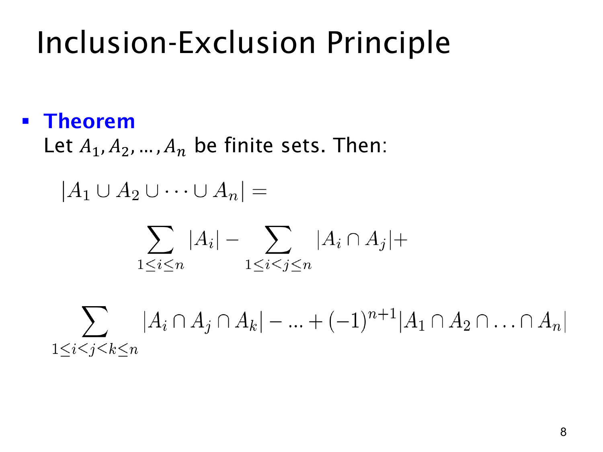

L1.8 · 第 7 页讲解原文
查看这一页课件

任意多个有限集合的容斥公式
设 A1,A2,…,An 是有限集合。它们的并集可以用交集大小交替加减来计算：
i=1⋃nAi=r=1∑n(−1)r+11≤i1<⋯<ir≤n∑∣Ai1∩⋯∩Air∣.
这个紧凑公式分成两层理解。内层固定选取 r 个不同集合，把所有这样的 r 重交集的大小加起来；外层再根据 r 的奇偶决定加还是减。
- r=1：加上全部单个集合的大小。
- r=2：减去全部两两交集的大小。
- r=3：加上全部三重交集的大小。
- 继续交替，直到全部 n 个集合的交集。
因此可以记成：奇数重交集用加号，偶数重交集用减号。 系数 (−1)r+1 正好表达这个规则。
下标 i1<⋯<ir 的作用是避免重复选同一组集合。例如 A1∩A2 与 A2∩A1 是同一个交集，只应列一次。第 r 层共有 (rn) 个交集项。
以四个集合为例，公式需要 4 个单集合项、6 个两重交集项、4 个三重交集项和 1 个四重交集项，符号依次是 +,−,+,−。总共有
(1n)+(2n)+⋯+(nn)=2n−1
个非空下标子集对应的项。这里数的是公式中的项；某些交集本身可能为空，贡献为 0。
这个定理不要求集合彼此独立，也不要求它们大小相同。有限性让这些基数的加减运算可以按普通整数处理。真正需要掌握的是如何数出题目中的各层交集。